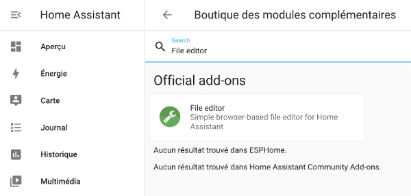
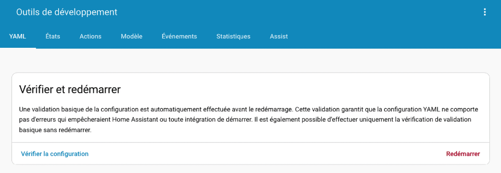
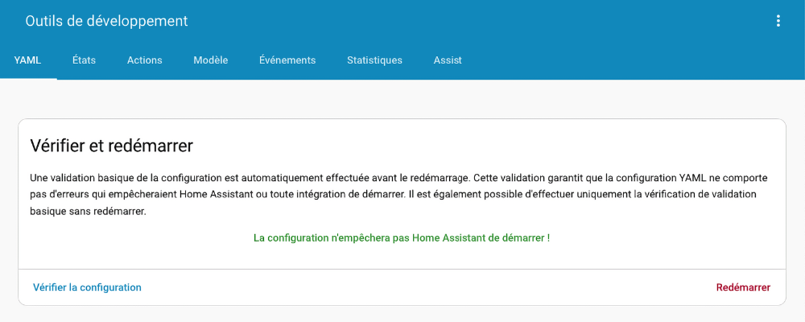
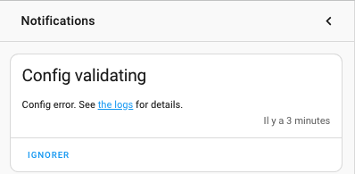

68. Le fichier configuration.yaml¶
68.1 Le format YAML¶
YAML est un format de représentation des données semblable à XML ou JSON.
Originalement, cet acronyme venait de Yet Another Markup Language. Ironiquement, il signifie maintenant YAML Ain't Markup Language.
Le format YAML ressemble énormément au JSON. En fait, YAML est un sur-ensemble de JSON.
Alors que JSON est le champion comme format d'échange de données, YAML est le préféré pour les fichiers de configuration.
En effet, contrairement à JSON, le format YAML permet :
- l'ajout de commentaires
- les chaînes sur plusieurs lignes
- une lecture plus facile puisqu'il utilise l'indentation plutôt que les délimiteurs
- la référence à une autre section du même fichier à l'aide d'ancres# Structure d'un fichier YAML
Les données dans un fichier YAML apparaissent sous forme de clé avec une valeur associée. Chaque clé est suivie d'un deux-points (:).
La valeur peut être:
- une chaîne de caractères
- un nombre
- un booléen
- une liste (séquence)
- un dictionnaire (association)
- une valeur nulle
YAML
# Exemple de chaîne de caractères
nom: ROBERT
prenom: Stéphane
# Exemple de nombre
age: 55
# Exemple de booléen
actif: true
# Exemple de liste (séquence)
fruits:
- pomme
- banane
- orange
# Exemple de dictionnaire (association)
personne:
nom: Toto
age: 12
# Exemple de valeur nulle
config:
Il est possible d'imbriquer les listes et les dictionnaires. Dans l'exemple ci-dessous, la clé personnes contient une liste de dictionnaires. Chaque dictionnaire contient les clés nom et age.
YAML
Exemples tirés de stephane-robert.info
Le nom des clés doit respecter ces conditions :
- Être unique dans son contexte
- Utiliser seulement des lettres minuscules, des chiffres et des barres de soulignement
Les fichiers YAML doivent répondre à ces exigences :
- utiliser des espaces (les tabulations ne fonctionnent pas)
- être consistant dans l'utilisation de l'indentation (généralement 2 ou 4 espaces)
- la valeur booléenne vrai peut être entrée comme:
- true
- on
- yes
- la valeur booléenne faux peut être entrée comme:
- false
- off
- no
Configuration sur plusieurs lignes¶
Lorsqu'une configuration comporte plusieurs lignes, il faut utiliser l'un de ces caractères :
- | : signifie que les sauts de lignes sont importants dans ce qui suit
- > : signifie que les sauts de lignes sont remplacés par des espaces. Autrement dit, la configuration pourrait être entrée sur une seule ligne et donner le même résultat.
Dans les deux cas, on peut ajouter un trait d'union après le caractère afin d'indiquer qu'il faut enlever les sauts de ligne à la toute fin de la chaîne.
YAML
value_template: >-
{% if is_state('input_boolean.porte_virtuelle', 'on') %}
Ouverte
{% else %}
Fermée
{% endif %}
Le fichier configuration.yaml¶
Ce fichier est utilisé par le logiciel domotique Home Assistant.
Fichier configuration.yaml
# Configure a default setup of Home Assistant (frontend, api, etc)
default_config:
# SMTP
notify:
- name: courriel_administrateur
platform: smtp
sender: homeassistant@mondomaine.com
server: mail.mondomaine.com
timeout: 15
port: 587
encryption: starttls
username: homeassistant@mondomaine.com
password: mot_de_passse_en_clair
sender_name: Home Assistant
recipient: destinataire@sondomaine.com
# Text to speech
tts:
- platform: google_translate
group: !include groups.yaml
automation: !include automations.yaml
script: !include scripts.yaml
scene: !include scenes.yaml
Pour plus d'information¶
« YAML ». Wikipédia. https://fr.wikipedia.org/wiki/YAML
« YAML ». yaml.org. https://yaml.org/
« Why JSON isn't a good configuration language ». Lucidchart. https://www.lucidchart.com/techblog/2018/07/16/why-json-isnt-a-good-configuration-language/
« YAML idiosyncrasies ». SaltStack. https://docs.saltstack.com/en/latest/topics/troubleshooting/yaml_idiosyncrasies.html
« YAML Style Guide ». Home Assistant. https://developers.home-assistant.io/docs/documenting/yaml-style-guide/
« YAML Multiline ». YAML Multiline. https://yaml-multiline.info/
« YAML Ain’t Markup Language (YAML™) version 1.2 - Scalars ». yaml.org. https://yaml.org/spec/1.2.2/#23-scalars
68.2 Travailler avec le module complémentaire File editor¶
Il existe quelques Applications qui permettent d'éditer des fichiers à partir de l'interface graphique de Home Assistant.
Parmi ceux-ci, notons File Editor et Studio Code Server.
Je vous montre ici comment installer File Editor.
Avantages de File Editor¶
- Très rapide à charger
Inconvénients¶
- Comme tout autre éditeur disponible à partir de l'interface Web de Home Assistant, File Editor ne peut éditeur que les fichiers du dossier config (sous HAOS : /mnt/data/supervisor/homeassistant) et de ses sous-dossiers
- Ne fonctionne pas s'il n'y a pas accès à Internet (Home Assistant pourrait être utilisé avec un Intranet seulement)
Installation¶
Pour l'installer, rendez-vous dans le menu Paramètres / Applications puis cliquez sur Boutique des Applications au bas de l'écran.
Dans la zone de recherche, tapez File editor.

Cliquez sur la tuile du module complémentaire puis, dans l'écran suivant, cliquez sur Installer.
Une fois le module installé, cliquez sur Démarrer.
Le module complémentaire est prêt à être utilisé. Vous pourrez revenir à cet écran à tout moment à partir de l'option de menu Paramètres / Applications / Clic sur la tuile File editor.
Pour un accès plus rapide, vous pouvez activer l'option Ajouter à la barre latérale.
Édition d'un fichier¶
Pour éditer un fichier, cliquez sur Ouvrir l'interface utilisateur Web dans le coin inférieur droit.

Vous avez maintenant atteint l'écran qui permet d'ouvrir le fichier de votre choix à l'aide de l'icône de chemise, à gauche de la barre bleue.

Note : pour afficher les fichiers du dossier .storage dans File Editor :
- Rendez-vous dans le menu Paramètres / Applications / Tuile File editor / onglet Configuration.
- Au-dessus de la zone Ignore Pattern, enlever .storage.
Dans une prochaine fiche, je vous explique comment utiliser File editor pour éditer le fichier configuration.yaml.
68.4 Éditer le fichier configuration.yaml¶
Le fichier configuration.yaml permet d'effectuer une foule de configurations dans Home Assistant.
Physiquement, il est placé dans le dossier /mnt/data/supervisor/homeassistant/configuration.yaml. Mais il est plus simple de travailler dans l'interface Web pour y accéder.
Pour l'éditer, ouvrez l'extension File editor ou Studio Code Server.
Cette démonstration est réalisée à l'aide de File editor.
Cliquez sur l'icône de chemise à gauche de la barre bleue.
Par défaut, l'extension présente les fichiers du dossier /mnt/data/supervisor/homeassistant (aussi appelé dossier config). C'est justement là que se trouve notre fichier.
Cliquez sur le fichier configuration.yaml.

Voici le contenu initial de ce fichier.
Fichier configuration.yaml
# Loads default set of integrations. Do not remove.
default_config:
# Load frontend themes from the themes folder
frontend:
themes: !include_dir_merge_named themes
automation: !include automations.yaml
script: !include scripts.yaml
scene: !include scenes.yaml
Chargement des configurations par défaut¶
La toute première ligne du fichier, default_config:, permet de charger les configurations par défaut de Home Assistant.
Chargement d'autres fichiers YAML¶
Afin de ne pas surcharger le fichier configuration.yaml, il est possible d'écrire des configurations dans d'autres fichiers YAML et de les inclure ici.
C'est ce qui est fait par défaut avec les fichiers automations.yaml, scripts.yaml et scenes.yaml.
Ajout de configurations¶
Il est possible d'ajouter des instructions dans le fichier configuration.yaml, notamment pour :
- ajouter des capteurs virtuels
- effectuer des configurations pour pouvoir envoyer du courriel
- effectuer des configurations pour s'abonner à un canal MQTT
Chacune des configurations doit être placée dans une section avec un nom unique.
Voici, par exemple, comment ajouter un capteur virtuel qui simule une porte pouvant être ouverte ou fermée.
Le code peut être ajouté à différents endroits dans le fichier. J'ai choisi ici de l'ajouter au bas des instructions existantes.
Fichier configuration.yaml
Puisque le nom de la section doit être unique dans son contexte, ceci n'est pas valide :
Fichier configuration.yaml
# INVALIDE
input_boolean:
porte_virtuelle:
name: Porte virtuelle
icon: mdi:door
input_boolean:
ventilateur_virtuel:
name: Ventilateur virtuel
icon: mdi:fan
Lorsque plusieurs configurations doivent faire partie d'une même section, il faut plutôt faire ceci :
Fichier configuration.yaml
input_boolean:
porte_virtuelle:
name: Porte virtuelle
icon: mdi:door
ventilateur_virtuel:
name: Ventilateur virtuel
icon: mdi:fan
N'oubliez pas d'enregistrer vos modifications en cliquant sur l'icône de disquette dans le haut de l'écran ou en appuyant sur Ctrl+S (Windows) ou ⌘ Cmd+S (macOS).
La couleur rouge indique que les modifications n'ont pas été enregistrées.
Note: il est possible d'ajouter des capteurs virtuels à l'aide de l'UI. Pour ce faire, rendez-vous dans le menu Paramètres / Appareils et services / onglet Entrées puis cliquez sur le bouton Ajouter une entité, puis choisissez Interrupteur.

Vérification des configurations¶
Avant de poursuivre, il est important de vérifier votre travail.
Suivez les conseils « validation_des_configurations » pour vous assurer que vos configurations sont valides.
Pour que les configurations soient prises en compte¶
La plupart des modifications au fichier de configuration nécessiteront un rechargement des configurations : Outils de développement / onglet YAML / Section Rechargement de la configuration YAML.

Parfois, un redémarrage de Home Assistant sera nécessaire : Paramètres / Système / Clic sur l'icône de démarrage dans le haut de l'écran / Redémarrer Home Assistant.
Pour plus d'information¶
« Advanced Configuration ». Home Assistant. https://www.home-assistant.io/getting-started/configuration/
« Default Config ». Home Asssistant. https://www.home-assistant.io/integrations/default_config/
« Troubleshooting your configuration ». Home Assistant. https://www.home-assistant.io/docs/configuration/troubleshooting/#problems-with-the-configuration
« Home Assistant configuration YAML (The beginners guide) ». Siytek. https://siytek.com/home-assistant-configuration-yaml-beginners-guide/
68.5 Validation des configurations¶
Une fois vos configurations en place dans le fichier configuration.yaml, il faut s'assurer que le tout soit valide avant de poursuivre.
Si vous essayez un redémarrage alors que le fichier de configuration n'est pas valide, Home Assistant ne le permettra pas.
Dans cette impression d'écran, on voit qu'il manque le symbole deux-points (:) à la ligne 12.

Interface graphique - bouton de validation¶
Il est possible de valider la configuration à tout moment à partir de l'interface graphique de Home Assistant.
Rendez-vous dans le menu Outils de développement / YAML puis cliquez sur le bouton Vérifier la configuration.

Si les configurations sont valides, vous verrez apparaître le message « La configuration n'empêchera pas Home Assistant de redémarrer! ».

S'il y a des erreurs, vous verrez plutôt les mots « Configuration non valide! » avec une explication de l'erreur.

Interface graphique - lors du démarrage¶
Home Assistant vérifie automatiquement la validité des configuration quand le système démarre.
S'il trouve des erreurs, il ajoute une pastille à côté du menu Notifications.

Un clic sur cette pastille nous confirme que la notification concerne une erreur de configuration.

Console Home Assistant¶
Le fichier de configurations peut également être validé à la console Home Assistant.
Entrez la commande suivante :
Terminal HAOS
Si les configurations sont valides, vous obtiendrez le message « Command completed successfully ».
Résultat à l'écran
En cas d'erreur, vous obtiendrez plutôt un message d'erreur.
Résultat à l'écran
# ha core check
Processing... Done.
Error: Testing configuration at /config
ERROR:annotatedyaml.loader:while scanning a simple key
in "/config/configuration.yaml", line 12, column 1
could not find expected ':'
in "/config/configuration.yaml", line 13, column 18
Fatal error while loading config: while scanning a simple key
in "/config/configuration.yaml", line 12, column 1
could not find expected ':'
in "/config/configuration.yaml", line 13, column 18
Failed config
General Errors:
- while scanning a simple key
in "/config/configuration.yaml", line 12, column 1
could not find expected ':'
in "/config/configuration.yaml", line 13, column 18
Successful config (partial)
Validateur YAML¶
Les validateurs YAML permettent d'effectuer l'analyse syntaxique (parse) de votre code YAML afin de vous aider à trouver ce qui ne va pas.
Il en existe plusieurs, par exemple :
- http://yaml-online-parser.appspot.com/
- https://codebeautify.org/yaml-validator
- http://www.yamllint.com/
Ces validateurs se concentrent sur la syntaxe YAML mais ils ne sont pas en mesure de vérifier si les configurations sont conformes à ce que Home Assistant s'attend.